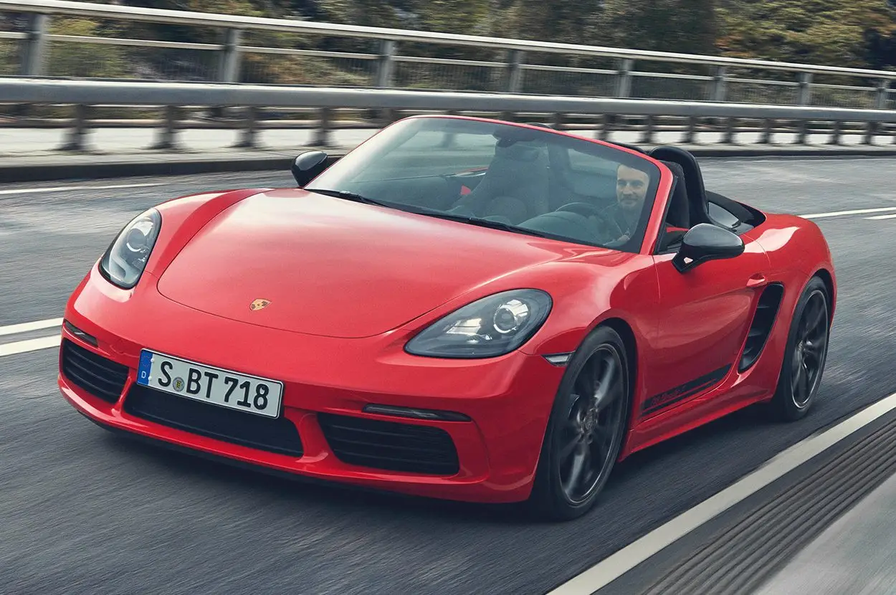

Os modelos 718 foram construídos para quem vive com esportividade total. Eles são carros esportivos de motor central que combinam o espírito esportivo do lendário Porsche 718 com o carro esportivo do futuro – e levam tudo isso para as ruas do mundo. Com um objetivo: trazer prazer ao dia a dia.
Preciso, sem firulas. Autoconfiante, e sem timidez. Baixo, largo e plano. O design dos modelos 718 é caracterizado por bordas de conotação esportiva e formas bem definidas.
O que torna os modelos 718 tão especiais? O seu desempenho, sua dirigibilidade, seu design, o espaço generoso de seus 2 bagageiros. E acima de tudo: um conceito de motor central que torna tudo isso possível.
